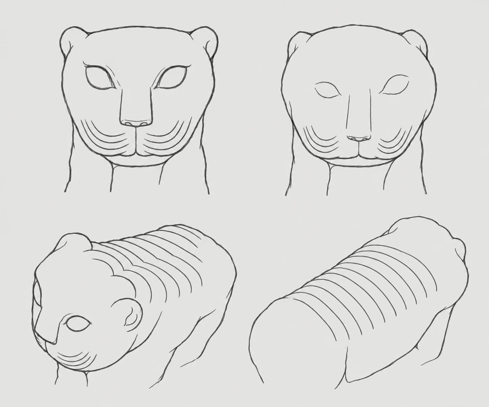

Index · 03
관찰 지점 정리
두 석사자를 같은 방향에서 비교할 수 있도록 다섯 부위의 관찰 구도를 정했다.

-
갈기
정수리·목 뒤 · 위쪽 사선
머리에서 목으로 이어지는 선과 겹침
-
수염
입 주변 · 정면
입 주변 선의 길이와 굽은 정도
-
무늬
목 뒤·등·몸통 · 위쪽
등에서 몸통 양옆으로 이어지는 무늬
-
이목구비
얼굴 전체 · 정면
귀·눈·코·입의 크기와 돌출 정도
-
눈매
눈 주변 · 정면 확대
눈꼬리의 기울기와 눈두덩의 높낮이